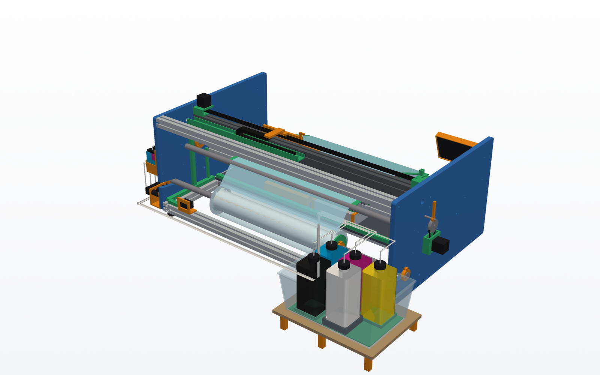
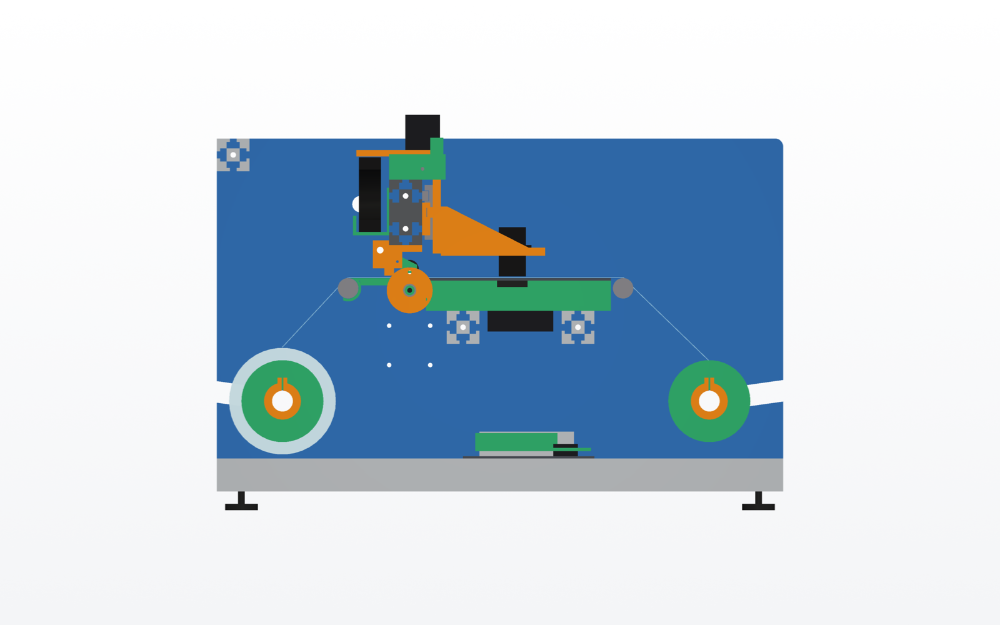
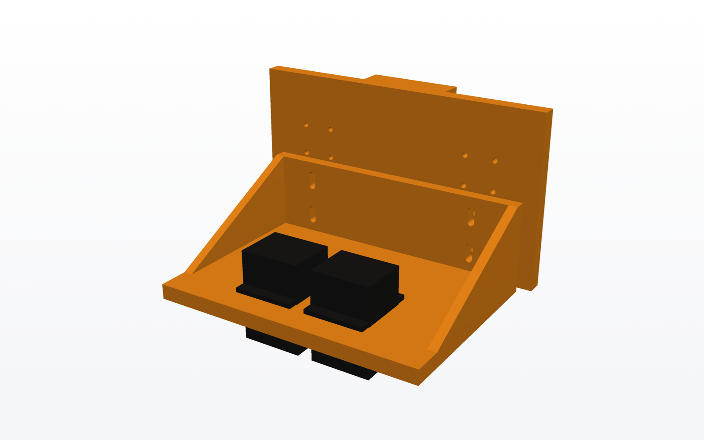
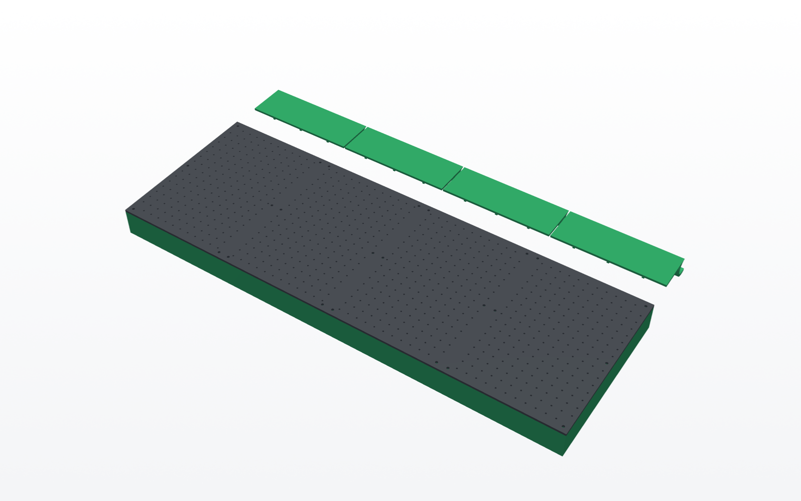
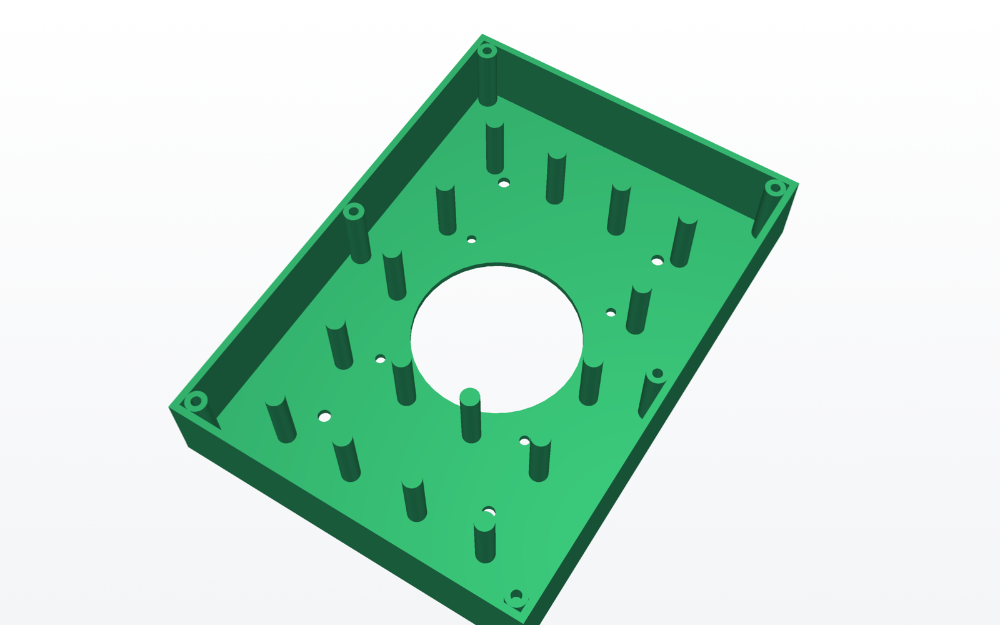
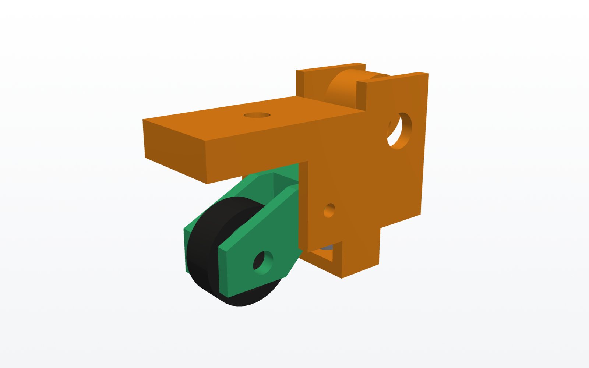
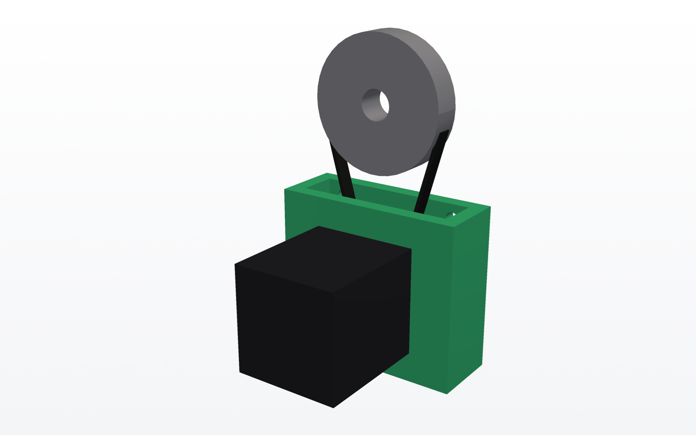
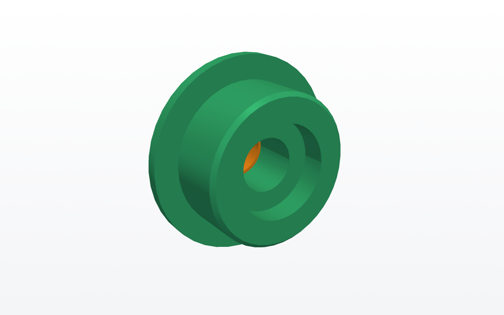

0.2 · 0.3
Chasis y viga X
Dos placas de aluminio de 10 mm con todos los agujeros de alineación, bastidor 4040 y viga 4080 con dos guías MGN12. Correa GT2 por encima de la viga.
OpenPrinter es una impresora Direct To Film de rollo, de hardware y software abiertos. Se construye con una impresora 3D, perfil de aluminio 4040 y dos placas cortadas por láser.
Medidas con film de 600 mm. Todo sale de un único archivo de parámetros: cambiando el ancho a 330 mm se obtiene la versión A3+.
Sección lateral de la máquina. El film viaja de izquierda (detrás) a derecha (delante).

Cada bloque es un módulo independiente del CAD (cad/*.py) que se puede rediseñar sin tocar los demás.

Dos placas de aluminio de 10 mm con todos los agujeros de alineación, bastidor 4040 y viga 4080 con dos guías MGN12. Correa GT2 por encima de la viga.

Impreso en 3D. La bandeja de los dos XP600 sube y baja ±4 mm en colisos para ajustar la distancia cabezal–film.

Placa de aluminio perforada sobre 4 cámaras impresas, cada una con su ventilador: zonas que se apagan con film estrecho.

Pilares que sostienen la placa, insertos M3 para atornillarla y boca para un ventilador de 80 mm.

Brazo basculante con rueda de TPU y muelle. Una leva excéntrica en un eje común levanta las 6 ruedas a la vez.

NEMA17 por fuera de la placa con reducción 4:1 (GT2 20T a 80T). Los colisos del soporte tensan la correa.

Ejes fijos de Ø25 en ranuras inclinadas; mandriles impresos con rodamiento 6005 que entran en el núcleo de 3".
Generada desde el modelo por cad/bom.py. Los precios son orientativos, para hacerse una idea:
compruébalos con tu proveedor.
| Artículo | Especificación | Cant. | € aprox. | Notas |
|---|---|---|---|---|
| Cargando… Si no aparece, abre la lista en el repositorio. | ||||
No incluye cabezales, electrónica, tintas ni filamento. Lista completa con piezas impresas y gramos de filamento.
Nada se ha fabricado ni probado todavía. Cada fase se valida con piezas reales antes de pasar a la siguiente.